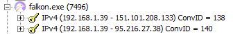

Falkon
Falkon é um navegador KDE que usa o mecanismo de renderização QtWebEngine, anteriormente conhecido como QupZilla.
Nível de Spyware: Provavelmente não é um Spyware
Quando outro colaborador testou este navegador no Linux, ele não fez conexões não solicitadas. Quando o executei no Windows, ele se conectou a um domínio não relacionado à página inicial (DuckDuckGo). Mas, não tenho certeza para que servia, e não foi reproduzido no Linux. Este navegador provavelmente está limpo, mas você deve executar seus próprios testes e me enviar um e-mail sobre o que encontrou ou não.
Ligando para casa?
Na primeira execução do Falkon, usando a versão 32 bits do Windows, ele se conectou a esses endereços, embora eu estivesse em sua página inicial, que parece estar armazenada localmente porque não cria nenhuma requisição quando vou a ele normalmente. Não sei para que servem. Talvez seja uma forma de ligar para sua origem? O primeiro IP é para o domínio: github.map.fastly.net que parece fazer parte de um CDN.
